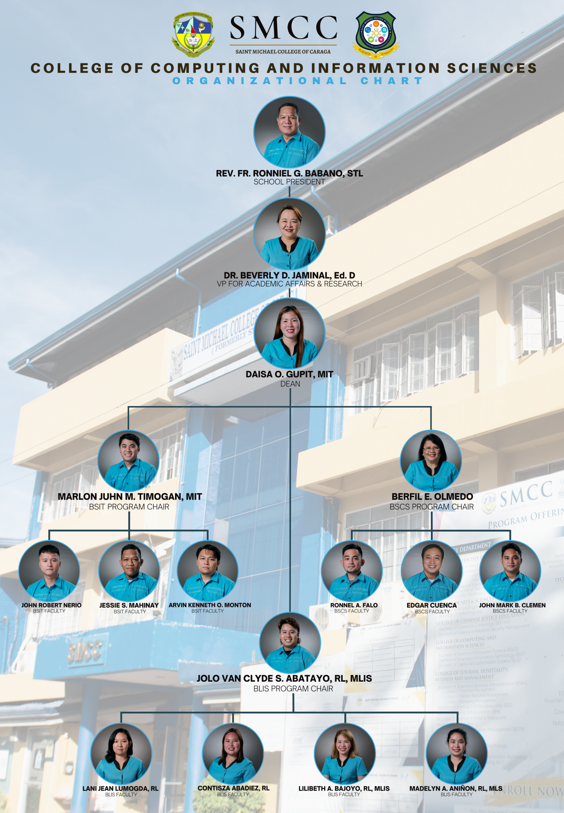

SCHOOL'S HISTORY
In 1948, NASIPIT was still a part of the Parish of Buenavista, whose Parish Priest was the late Fr. Martin Westeinde, a Dutch MSC. As the town progressed, population also increased and business gained momentum with the start of the logging industry of the Nasipit Lumber Company (NALCO). Fr. Martin and his co-adjurer Fr. Atanacio de Castro saw the need of putting-up a secondary school.
It started its operation on July 1, 1948, with Rev. Fr. Francisco Van Dyke as the first Director. He was succeeded by Rev. Fr. Enrique Van Ma-anen, Rev. Fr. Vicente Portillo, Rev. Fr. Mateo Van Santvoord, and Rev. Fr. Anthony Krol in the order of succession. Rev. Fr. Krol was the last Dutch priest who served as the school director.
The school site is beside the rectory with an area of 1,630 sq.m. Fr. Gerard Cruisjen, one of the subsequent Directors converted the nipa-wooden structure into a concrete two-storey building with 16 classrooms.
When the Filipinization Law was implemented in 1975 a layman (now deceased) Mr. Gregorio Orias, became the first layman School Director until he retired in 1977. He was followed by Mr. Antonio L. Suarez, the first layman Director/Principal of the school. Faro Gatchalian followed until 1985 then Mrs. Necita Lim took the helm of the Directorship until 1991 while acting also as the Principal of St. James High School of Buenavista, an adjacent town of Nasipit . In 1991, Fr. Achilles Ayaton became the School Director until 1993. In 1994, Msgr. Cesar L. Gatela took over the School's Directorship until 1999 when he succumbed to a cardiac arrest in Cebu City. In his term, he opened the Pre-School Department with Sister Minah B. Hijada as the Administrator and he bought 19 computers integrating the Computer Technology subject to all levels of the High School Department.
The Teatro, Sayaw, at Awit Production (TESAW Production) Center of the Michaelinian Performing Arts was established on June 01, 1997 with Dr. Dennis P. Mausisa as the Founder and Artistic Director.
In 1999, after the sudden death of Msgr. Gatela, Msgr. Juan de Dios Pueblos, the bishop of Butuan appointed Msgr. Bienvenido A. Betaizar as the School Director who was later on promoted as School President until at present.
June 2000, Msgr. Betaizar opened the Grade School department with Mrs. Minda R. Cocon as the first Principal offering Grades I-IV and the College Department with Technical Courses offering with Mr. Antonio L. Suarez as the College Administrator until his death on February 2002.
June 2001, Baccalaureate Programs were opened which include Bachelor of Elementary Education, Bachelor of Secondary Education major in English, Bachelor of Science in Business Administration major in Financial Management and Bachelor of Arts in English Language. The Planning and Development Center was established with Dr. Dennis P. Mausisa as the Head of Office.
February 16, 2002, the name Saint Michael's Institute was replaced with Saint Michael College of Caraga as suggested by Mrs. Vanica P. Del Rosario during the 1st SMI General Assembly. The name was duly approved by the Securities and Exchange Commission.
In 2002, Dr. Dennis P. Mausisa unveiled the SMCC's Vision 2020 with the flagship program "Magbayanihan Tayo". SMCC's Vision 2020 is a long range master plan of SMCC for seven key areas: Personnel, Instruction and Curriculum, Physical Plant and Facilities, Library, Student Services, Community Extension Service, and Research and Accreditation. This year also, within three years of operation the College Department was named as one of the Top Three Performing Schools in the Caraga for the Kabalikat Award 2002 of TESDA. Additional courses were opened like 2-Year Computer-Based Accounting Technology, 2 Year Tourism Technology and 2 Year Computer-Technician. Speech subject was introduced in all departments complete with the state of the art speech facilities.
2003, the Accounting Department was established.
June 10, 2005, a four-storey concrete building was inaugurated. The Elementary Department was transferred from the Montinola Building to the main campus where the new building is situated. The new building housed the different offices, Preschool, High School, Mini Hotel, AVR and Faculty Rooms. Bachelor of Science in Computer Science was opened. Mini School bus was acquired.
2006, SMCC Angel Festival was introduced by Dr. Mausisa to the Michaelinian community.
2007, SMCC launches the SMCC Website smccnasipit.edu.ph
2008, College Department awarded by TESDA Region XIII as MODEL TVET Provider School in Agusan del Norte-Butuan City. The SMCC school logo was
2009, Bureau of Immigration granted the school the accreditation permit to accept Foreign Students from Preschool to College. Commission on Higher Education granted the permit to operate Bachelor of Science in Hotel and Restaurant Management.
2009, Bureau of Immigration granted the school the accreditation permit to accept Foreign Students from Preschool to College. Commission on Higher Education granted the permit to operate Bachelor of Science in Hotel and Restaurant Management.
2010, Bachelor of Science in Information Technology and One Year Seafarer were opened.
2012, additional programs were opened the Bachelor of Science in Criminology, Bachelor of Science in Tourism Management, and the Housekeeping NCII. TESDA bundled programs were opened the Two year Hotel and Restaurant Technology with qualifications in Food and Beverage Services NC II and Housekeeping NCII, Two year Information Technology with qualifications in Computer Hardware Servicing NCII and Computer Programming NC IV and Two year Computer Electronics Technology with qualifications in Computer Hardware Servicing NC II and Consumer Electronics Servicing NC II.
2014, SMCC was granted by the Department of Labor and Employment (DOLE) the Certificate of Compliance on General Labor Standards, Occupational Safety and health Standards, and Child Labor-Free Establishment.
2015, Opening of additional TESDA Programs, the One Year Ship's Catering Services NC I (formerly Seafarer) and Visual Graphics NC III.
Permit to operate Senior High School was granted by the Department of Education offering Grades 11 and 12.
SMCC Higher Education Research Journal Book 1 was published and granted with ISBN and ISSN.
Miss Icee Galinato, Fourth (4th) placer in the Licensure Examination for Teachers Elementary Level September 2015 Board Examination.
2016, Opening of additional departments, the Learning Resource Department and Research and Publication Department. The Learning Resource Department includes the library, IM Center, and E-Library.
Construction of the 4-Storey SMCC Annex Building at the former Elementary Department Area.
2017, Opening of the SMCC DXSM FM. The only FM Station of the Diocese of Butuan.
2018, Opening of Bachelor of Physical Education, Bachelor of Technical-Vocational Teacher Education, Bachelor of Library and Information Science, Bachelor of Public Administration, Bachelor of Science in Entrepreneurship.
SMCC was certified with ISO 9001:2015. The first school in the Diocese of Butuan with ISO certification and the first school in the Caraga Region to be ISO certified 9001:2015 version.
SMCC MILESTONES
1947 - Fr. Martin Westeide, a Dutch MSC and Fr. Atanacio de Castro saw the need of putting-up a secondary school.
1948 - July 1, 1948 permit to operate was granted with Fr. Francisco Van Dyke as its First Director. Mr. Gregorio E. Orais was the principal, cashier, and librarian all together at the same time.
1949-1952 - Fr. Gerard Cruijen, one of the subsequent directors converted the nipa-wooden structure into a two-storey concrete building with 16 classrooms.
1961-1963 - School quadrangle was constructed through the effort of Fr. Cruijen who was re-appointed School Direction for the second term.
1975 - Filipinization Law was implemented and Mr. Gregorio Orais became the first layman school director until he retired in 1977.
1977 - Mr. Antonio L. Suarez became the first layman Director/Principal in concurrent position.
1978 - Mr. Faro Gatchalian became the Director/Principal until 1985.
1985 - Mrs. Necita Lim took at the helm of the administration and became the last layman director until she was replaced by Fr. Achilles Ayaton 1991.
1994 - Msgr. Cesar L. Gatela was installed as new director and parish priest. In here, he bought 19 computer units and offered computer classes in high school. The Pre-school Department was opened with Sister Minah B. Hijada as the administrator.
1997 - Roofing of the quadrangle making it the SMI mini gymnasium through the efforts of the alumni, teachers, parents, and Msgr. Gatela. - Teatro, Sayaw, at Awit Production (TESAW Production) Center of the Michaelinian Performing Arts was established with Dr. Dennis P. Mausisa as the Founder and Artistic Director.
1998 - Golden Julibee Celebration attended by prominent personalities. A week-long celebration worth remembering.
1999 - Due to the sudden death of Msgr. Gatela, Fr. Bienvenido A. Betaizar was appointed as the new School President at the same time parish priest.
2000 - The Elementary and College Department opened with Grades I-IV and Technical Courses as starters. HRM Department won in the provincial, regional champion, and national finalist in restaurant services category of the TESDA Skills Competition.
2001 - February 16, 2001 was the launching of the new school name, from Saint Michael Institute to "Saint Michael College of Caraga". Academic courses opened such as Bachelor of Elementary Education (BEEd), Bachelor of Secondary Education (BSEd) major in English, Bachelor of Science in Business Administration (BSBA) major in Financial Management, and Bachelor of Arts in English Language (AB English). - The Planning Development Center was established.
2002 - The Planning Center unfolds the SMCC's Vision 2020 with the "Magbayanihan Tayo" as the flagship program. - College Department was awarded as one of the Top Three Performing Schools in the Caraga for the Kabalikat Awards 2002 of TESDA. - The Planning Center introduces the Speech Subject in all departments complete with the state of the art facilities, one of its kind in the country.
2003 - Accounting Department was established.
2004 - HRM became the Third Placer in the Kumbira Festival Table Setting Category Minadao-Wide HRM Competition in Cagayan de Oro City.
2005 - June 10, 2005, blessing and inauguration of the Three-Storey SMCC Magbayanihan Center. This building houses the different academic and administrative offices as well as laboratories and classrooms. - Commission on Higher Education granted the permit to operate Bachelor of Science in Computer Science.
2006 - College Department became the Over-all Champion in the Butuan City-Agusan del Norte TESDA Skill Competition with gold awards in the categories of Restaurant Services, Computer Technician, Consumer Electronics, and Cookery. - SMCC Angel Festival was introduced by Dr. Dennis P. Mausisa to the Michaelinian community.
2007 - Launching of the SMCC Website https://smccnasipit.edu.ph/
2008 - College Department awarded by TESDA Region XIII as MODEL TVET Provider School in Agusan del Norte-Butuan City. - New school logo was implemented.
2009 - Bureau of Immigration granted the school the accreditation permit to accept Foreign Students from Preschool to College. - Commission on Higher Education granted the permit to operate Bachelor of Science in Hotel and Restaurant Management.
2010 - Commission on Higher Education granted the permit to operate Bachelor of Science in Information Technology. - TESDA granted the permit to operate One-Year Seafarer with specialization in Stewarding.
2012 - Commission on Higher Education granted the permit to operate Bachelor of Science in Criminology, Bachelor of Science in Tourism Management. - TESDA granted the permit to operate Housekeeping NCII. Bundled programs were opened the Two-Year Hotel and Restaurant Technology in Food and Beverage Services NCII and Housekeeping NCII. Two-Year Information Technology with qualifications in Computer Hardware Servicing NCII and Computer Programming NCIV, and Two-Year Computer Electronics Technology with qualifications in Computer Hardware Servicing NCII and Consumer Electronics Servicing NCII. - New school's Vision and Mission statement adapted from the Diocese of Butuan Educational System's Vision and Mission Statement (DBES) as agreed by DBES Board.
2014 - SMCC was granted by the Department of Labor and Employment (DOLE) the Certificate of Compliance on General Labor Standards, Occupational Safety and Health Standards, and Child Labor-Free Establishment. - New Vision and Mission statement was implemented after the Medium-Term Strategic Planning Workshop duly approved by the Board of Trustees.
2015 - Opening of additional TESDA Programs, the One-Year Ship's Catering Services NCI (formerly Seafarer) and Visual Graphics NCIII. - Permit to operate Senior High School was granted by the Department of Education offering Grades 11 and 12. - SMCC Higher Education Research Journal Book 1 was published and granted with ISBN and ISSN. - Acquisition of additional lot at Barangay Triangulo which will be the future site of the SMCC Triangulo Campus. - Miss Icee Galiato, Fourth (4th) Placer in the Licensure Examination for Teachers Elementary Level September 2015 Board Examination.
2016 - Opening of addtional departments, the Learning Resource Department and Research and Publication Department. The Learning Resource Department includes the Library, IM Center, and E-Library. - Construction of the 4-storey SMCC Annex Building at the former Elementary Department Area.
2017 - Opening of the SMCC DXSM FM. The only FM Station of the Diocese of Butuan.
2018 - Opening Bachelor of Physical Education, Bachelor of Technical-Vocational Teacher Education, Bachelor of Library and Information Science, Bachelor of Public Administration, Bachelor of Science in Entrepreneurship. - SMCC was certified with ISO 9001:2015. The first school in the Diocese of Butuan with ISO certification and the first school in Caraga Region to be ISO certified 9001:2015 version. - Accepted as member of the Philippine Society for Quality. - Granted with the International Accreditation by the Asia Pacific for Events Managements of the United Kingdom last October 12, 2018. The first school in the Caraga Region and Northern Mindanao to be accredited. - Over-all Champion of the Kumbira Festival 2018, Mindanao-Wide HRM Competition at Cagayan de Oro City. - Awarded as Most Outstanding Technical Vocational Institution of TESDA Butuan City and Agusan del Norte for 2018. - Awarded as One of the Top Ten Finance Students of the Philippines 2018. - Awarded as Outstanding Students of the Caraga Region for 2018.
School Logo
Courses Offered
CCIS
BSIT
-Bachelor of Science in Information Technology
BSCS
-Bachelor of Science in Computer Science
BLIS
-Bachelor of Library and Information Science
DIT
-Diploma In Information Technology

ADMISSION REQUIREMENTS
As a general policy on admission, the school shall accept new and returning pupils/students provided they meet the following requirements:
1. Preschool (New) Age Requirement: Nursery - Four (4) Years Old on or before October 31 Kindergarten - Five (5) Years Old on or before October 31 Photocopy of the Authenticated PSA Birth Certificate Two (2) pcs. 2x2 colored picture Interview with the Principal Marriage Contract of the Parents (optional)
2. Grade 1 Age Requirement: Grade 1 - Six (6) Years Old on or before October 31 Photocopy of the Authenticated PSA Birth Certificate Form 138 (Report Card Preschool Education) Two (2) pcs. 2x2 colored picture Marriage Contract of the Parents (optional) Passed the Reading Test Certificate of Completion (Photocopy)
3. Returning Pupils / Students Final Examination Permit / Clearance Form 138
4. High School Photocopy of the Authenticated PSA Birth Certificate Form 138 (Report Card from Grade 6) Certificate of Good Moral Character Two (2) pcs. 2x2 colored picture Interview with the Principal Marriage Contract of the Parents (optional)
5. College First Year Students except BSED and BEED Programs Form 138 (Report Card) Photocopy of the Authenticated PSA Birth Certificate Two (2) pcs. 2x2 colored picture 1 long brown size envelope 1 long cellophane envelope Good Moral Certification from the Principal Passed the Reading and Multiplication Table Tests NCAE Result Marriage Contract (if married) Photocopy of PWD ID from DSWD (if PWD) Photocopy of any proof if 4Ps/Listahan 2.0 member or Household Number Certificate of Residency (if resident from Nasipit)
6. College First Year BSED and BEED Students Form 138 (Report Card) with General Average of 85% Photocopy of the Authenticated PSA Birth Certificate Two (2) pcs. 2x2 colored picture 1 long brown size envelope 1 long cellophane envelope Good Moral Certification from the Principal Passed the Reading and Multiplication Table Tests Student Aptitude Test for Teachers (SATT) score of not less than 167 IQ Test (OLSAT) score of not less than 31 NCAE Result Marriage Contract (if married) Photocopy of PWD ID from DSWD (if PWD) Photocopy of any proof if 4Ps/Listahan 2.0 member or Household Number Certificate of Residency (if resident from Nasipit)
7. Basic Education Transferees Passed the Entrance Examination (written and oral) Form 138 Photocopy of the Authenticated PSA Birth Certificate Certificate of Good Moral Character Two (2) pcs. 2x2 colored picture Interview with the Principal Marriage Contract of the Parents (optional) Passed the Reading and Multiplication Table Tests
8. College Transferees (non-educational programs and TESDA Programs except Seafarer) Honorable Dismissal Transcript of Records Photocopy of the Authenticated PSA Birth Certificate Passed the Reading and Multiplication Table Test Two (2) pcs. 2x2 latest colored picture 1 long brown sized envelope 1 long cellophane envelope Good Moral Certification Marriage Contract (if married) Photocopy of PWD ID from DSWD (if PWD) Photocopy of any proof if 4Ps/Listahan 2.0 member or Household Number Certificate of Residency (if resident from Nasipit)
9. College Transferees (BSED and BEED Programs) Honorable Dismissal Transcript of Records General Average of 85% Photocopy of the Authenticated PSA Birth Certificate Passed the Reading and Multiplication Table Tests Two (2) pcs. 2x2 colored picture 1 long brown size envelope 1 long cellophane envelope Good Moral Certification Marriage Contract (if married) Photocopy of PWD ID from DSWD (if PWD) Photocopy of any proof if 4Ps/Listahan 2.0 member or Household Number Certificate of Residency (if resident from Nasipit)
10. Seafarer Form 138 (Report Card) Photocopy of the Authenticated PSA Birth Certificate Must be 18 Years Old on or before the date of completion Two (2) pcs. 2x2 colored picture 1 long brown size envelope 1 long cellophane envelope Good Moral Certification from the Principal Passed the Reading and Multiplication Table Tests NCAE Result Marriage Contract (if married)
11. Aliens / Naturalized Filipinos Passed the Entrance Examination (written and oral) Form 138 Photocopy of the Authenticated PSA Birth Certificate (translated in English) Certificate of Good Moral Character Two (2) pcs. 2x2 colored picture Interview with the Principal Alien Certification of Registration (ACR) Study Permit from the Bureau of Immigration Photocopies of child's and parent's passport and visa Marriage Contract of Parents (optional)
CONTACT US
 Atupan St. Brgy. 4, Nasipit, Agusan del Norte Mindanao, Philippines 8602
Atupan St. Brgy. 4, Nasipit, Agusan del Norte Mindanao, Philippines 8602
 https://www.facebook.com/SMCCofficial
https://www.facebook.com/SMCCofficial

 (085) 225-0208 / 0906-404-8695
(085) 225-0208 / 0906-404-8695
 8:00 am - 5:00 pm
8:00 am - 5:00 pm